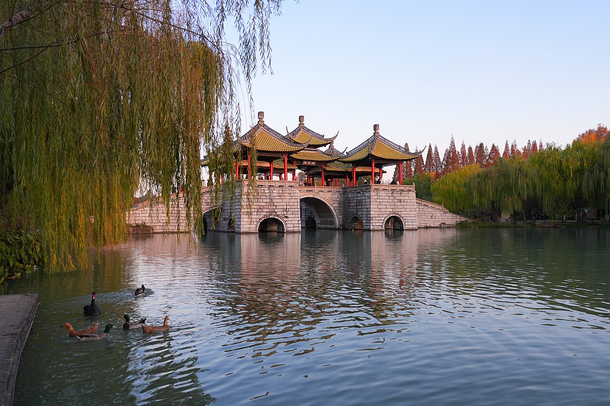

第1天
老门东与秦淮河岸
沿河走一段；想乘船时，再查当日运营时段与票务。
沿水而行。
让旅行，慢一点。
从秦淮灯影，到湖上亭桥，再走进一座园林。每天选一个重点，留出看风景与吃早餐的时间。
老门东慢行，傍晚去夫子庙秦淮河一带。
按兴趣与预约择一，留足参观时间。
上午预留交通时间，安顿后沿湖看亭桥。
按预约参观运博，傍晚漫步东关街。
预留交通余量，抵达后在河街小巷散步。
拙政园或苏博本馆择一，再按班次返程。
先确定场馆预约，再安排跨城交通。每天留一个重点，把余下的时间交给街巷与水边。

先走街巷，
再看灯影。
老门东的传统民居适合步行细看。到了夫子庙秦淮河一带，再看沿岸建筑、灯光与水上倒影怎样彼此呼应。
第1天
沿河走一段；想乘船时，再查当日运营时段与票务。
第2天
山林与建筑选钟山，文物与展览选南京博物院。
街巷一味尝一份南京盐水鸭。
南京博物院、中山陵分别预约；钟山各景点的门票和开放要求分别核对。
看一湖亭桥，
坐一桌早茶。

沿湖看五亭桥、白塔与二十四桥；次日坐下吃早茶，再去运博看水与城市的故事。
从南京转往扬州，安顿后留一个下午沿湖游览。
早茶后按预约参观，傍晚去东关街。
运博实名分时预约，通常周一闭馆；法定节假日查看当期公告。
园里看山水，
巷里看日常。

在园里看池水、山石与建筑的关系；在平江路，看河与街巷怎样相连。
从扬州抵达后，预留接驳余量，在平江路一带步行。
按兴趣和预约择一；依据返程班次安排停留。
街巷一味一碗苏式面，讲究汤水与浇头。
苏博本馆免费实名预约，注意与西馆区分，使用官方入口；园林门票另行办理。
第3、5天跨城。车次、车站与接驳按日期另查，从到站到景区仍需时间。
遇闭馆、雨天或预约未成功可调换日程。带好证件与雨具，按体力减少步行。